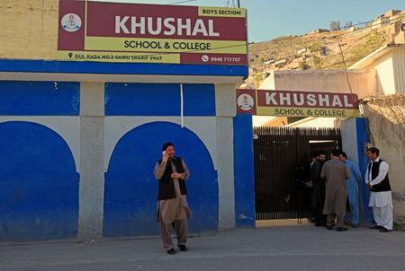

I was born on July 12, 1997, in Mingora, Pakistan. For most Pashtuns like me, when a son is born, they celebrate it with the firing of rifles. When a daughter is born, it is a bad moment (Yousafzai 13). My mother comes from a well-off family, while my father does not (Yousafzai 22).
My name means "grief-stricken," although I am not grief stricken. The name "Malala" comes from a female warrior called Malalai of Maiwand of Southern Afghanistan. Malalai was the daughter of a sheperd. Before she started commanding forces, she first went to the battlefield to treat the wounded. When she saw that her men were losing, she led the Pashtun forces to victory against the British (Yousafzai 14-15).